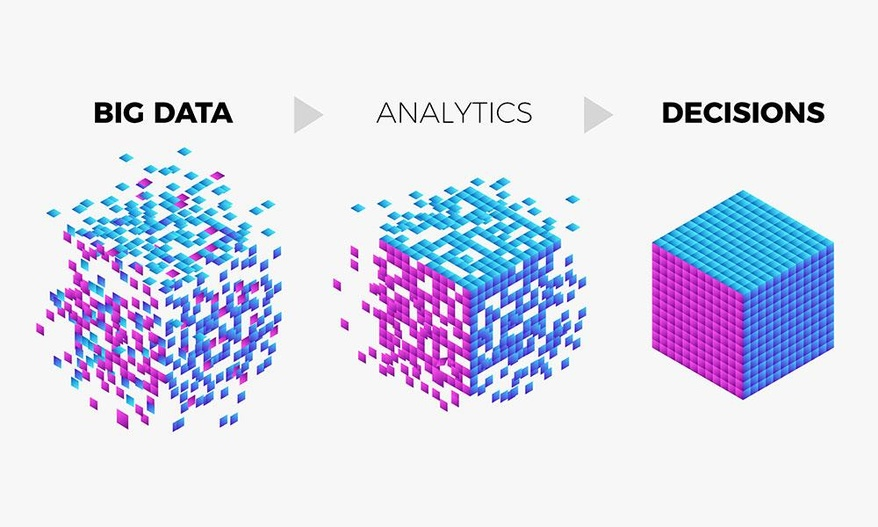
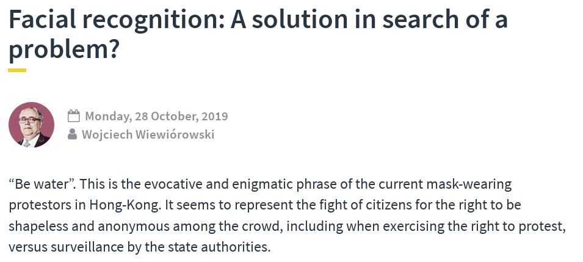

'Intelligente'
Videoüberwachung
und
Gesichtserkennung
von
Stefan Leibfarth
31.10.2019
Was ist der Chaos Computer Club e.V. (CCC) ?
- größte europäische HackerInnen-Vereinigung
- Gründung: 1981
- Grundlage: Hackerethik
- Vermittelnde im Spannungsfeld technischer und sozialer Entwicklungen
- Veranstaltungen, Politikberatung, PMs, Publikationen, ...
- Regelmäßig als ExpertInnen beim BVerfG, BT-Ausschüssen, ...
In Stuttgart:
Stammtische, Vortragsreihe, Workshops, Cryptoparties, CmS...
Mehr auf www.cccs.de
Grundkonflikte der Massen-Überwachung
Quelle: Piratenpartei Deutschland
Grundkonflikte der Massen-Überwachung
"Die Daten wertet doch nur ein Compter aus"
Quelle: https://datafloq.com/read/big-data-analytics-paving-path-businesses-decision/6110
Gesichtserkennung
Hier: Bahnhof 'Südkreuz' in Berlin (Quelle)
Gesichtserkennung am Südkreuz
Quelle: https://www.linux-magazin.de/ausgaben/2018/06/snapshot-3/ |
|
'Intelligente' Videoüberwachung in Mannheim

(Quelle)
'Intelligente' Videoüberwachung in Mannheim
(Quelle) |
|
Blick nach China
Gegenmaßnahmen
(Quelle)
Gegenmaßnahmen
(Quelle)
Technik wird besser
... alles nur eine Frage der Zeit
Juristisch sehr fragwürdig

Oberster europäischer Datenschützer sieht Videoüberwachung kritisch